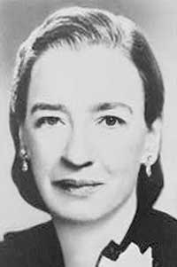
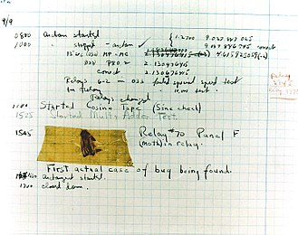
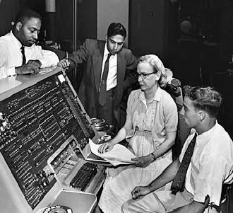
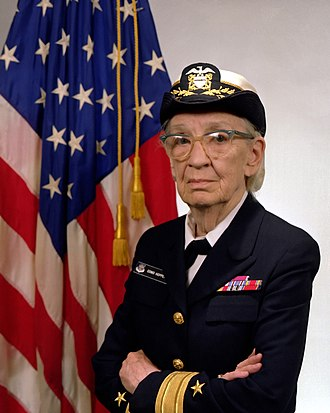

Grace Hopper
Grace Hopper is an American computer scientist and United States Navy rear admiral. One of the first programmer of Havard Mark I. Her idea of machine-independent programming language leads to the development of an high-level programming labguage “COBOL” which we’re still using today.
Grace Hopper was born in 9th of December, 1906. She was very curious as a child; this was a lifelong trait. At the age of seven, she decided to determine how an alarm clock worked and dismantled seven alarm clocks before her mother realized what she was doing (she was then limited to one clock).At age 17, she went to Vassar College, then graduated in 1928 with a bachelor’s degree in mathematics and physics then earned her master’s degree in Yale University in 1930. In 1934, she earned a Ph.D. in mathematics in Yale.
During the second world war, Hopper joined the US navy as a part of the Havard Mark I programming staff. While working on the Mark II computer, they found a reason that caused it stopped working is a moth flew inside the circuit. Hopper called this little error “bug” and the process of searching and removing the error “debug”. It is used by people nowadays still.
After World War II, Hopper joined a program for development of UNIVAC I, the second commercial computer developed in the US. The original purpose of UNIVAC I is to do calculations. But Hopper think it can do way more than that, she came up an idea of making high-level programming language. Then she created a compiler to translate source code into computer language, A0 system. Hopper in front of the UNIVAC
But because of the use of different kinds of compilers, people decide to have a committee to solve this problem, they worked together with Hopper to make a new language standard, and that’s the origin of COBOL.
In 1966, Hopper retired from the navy for she is already 60 years old. But the navy realized they can not process the programs, so they changed the rules and called her back, she worked all the way till 80. She passed away in 1992 peacefully in her house.
Hopper in 1984
A ship in port is safe, but that is not what ships are built for.
------Grace Hopper